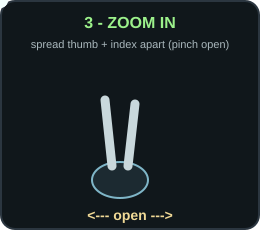
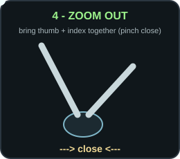

Object control task. Return your hand to neutral (open, relaxed) for ~2 seconds between each step.

→ zoom_in Spread thumb and index apart (pinch open). Keep the hand still.
→ zoom_out Bring thumb and index together (pinch close). Keep the hand still.How to record: in the app pick Webcam + Robust C6 + Object control task, press Start Task, then do steps 1→2→3→4. Stop, and repeat for 3-5 separate sessions.
For clean numbers: sit facing a light source and keep your whole hand in frame at medium distance - on earlier logs half the frames lost the hand. Do one gesture at a time, pausing in neutral between them.
Note: steps 1-2 are real IPN reference clips; steps 3-4 are the thumb-index pinch the live controller actually uses (the dataset zoom clip moved the whole hand and no longer matches).